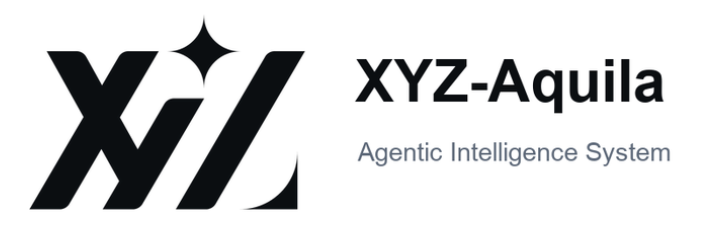
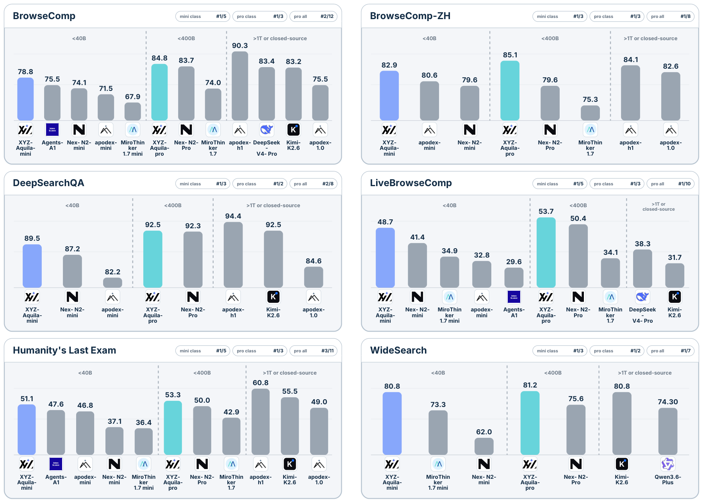

Hundreds of agents. One evolving intelligence.
AI4AI autonomously launches parallel experiments, learns from success and failure, creates reusable skills, and passes verified experience into the next generation. Humans are available to steer direction and boundaries—not required to operate the loop.
Every experiment changes the next experiment.
Scores are only one output. AI4AI also accumulates research memory, reusable skills, data and system assets, and a larger capability frontier.
Baseline before intervention
Evidence was removed; experiment rejected
Original tool responses preserved
History + repaired + short/long search groups
154 commits retain winning and losing routes.
19 learned skills become tools for later agents.
Data, verifiers, harnesses, checkpoints, infra.
Accuracy, hard cases, efficiency, reliability.
Primary V1 surface: data construction, SFT/RL recipes, checkpoints and fixed evaluation.
18 active workspacesReal task-leakage and Env Verification cases from the paper.
5 active workspacesContext, tools, finalization, replay and scoring protocol.
product simulationSearch, scrape, summarization, sandbox and serving interfaces.
product simulationThe models produced by the loop.
External benchmarks are reserved for final assessment and are never queried during optimization.

XYZ-Aquila-mini
Qwen3.6-35B-A3B · 256K context · search / scrape / python · 650 max interaction steps
XYZ-Aquila-pro
Qwen3.5-397B-A17B · system-selected backbone · same bounded evaluation discipline

Every animation resolves to a trace.
This theater compresses a real archived workspace. Every scene is labeled as verified trace, artifact reconstruction, or product simulation.
commit 360e90de · parent f54d597f
two replicas: 0.5075 / 0.5125
Positive point estimate; paired confidence intervals cross zero.
/home/wanyi.chen/workspace/wanyi.chen/git_meta_repos/repos/repo_meta.git
axrd/ai4ai/scenarios/post_train/